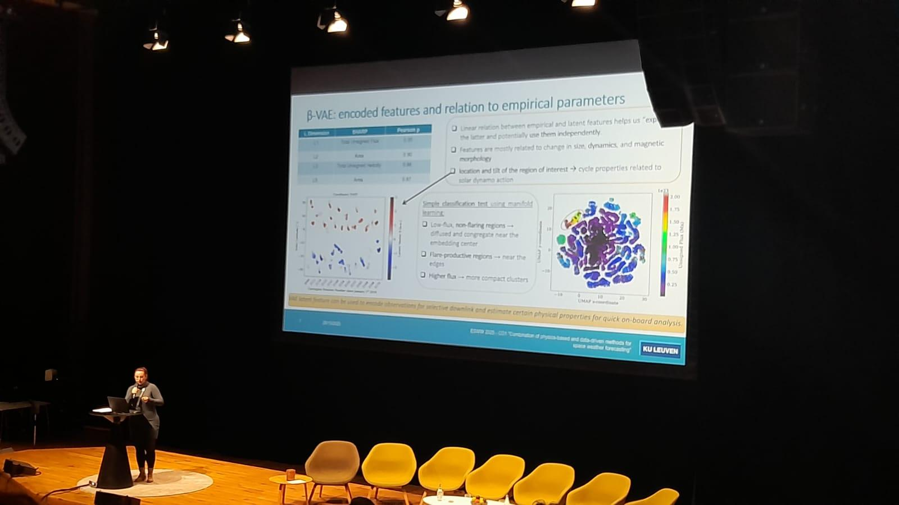

Figure 1. The proposed MSCA project combines empirical parameters with
machine learning–extracted features to build robust models and
probabilistic forecasting schemes of space weather. By collecting and
integrating extensive remote sensing and in situ observations, the project
seeks to characterize the dynamical physical phenomena in the coupled Sun–
Earth system and their interactions. A central question is: Which features
of solar activity must be identified and parameterized to enable accurate
and reliable forecasts of flares, CMEs, and their near-Earth impacts?.
2) Description of the Work Packages
Explain the features, results, and what you observed. Add another figure if needed.

Figure 2. Caption with the key point / takeaway.
Time line and Dissemination
Feature A seems stable across ARs under chronological splits.
Feature B looks strong but may be sensitive to selection bias.